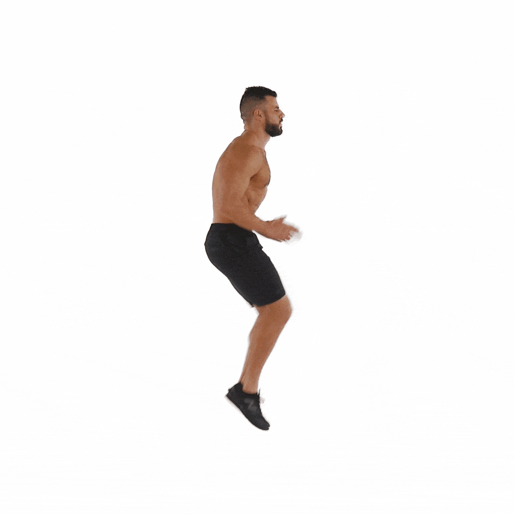

Técnica: Comienza en posición de pie, baja en cuclillas, apoya las manos, salta hacia atrás en plancha, realiza una flexión y vuelve a la posición inicial.

Técnica: Da un paso hacia adelante flexionando ambas rodillas hasta que la pierna trasera casi toque el suelo.

Técnica: Corre en el lugar levantando las rodillas lo más alto posible.
Técnica: Mantén el cuerpo en línea recta apoyándote en un antebrazo y el borde del pie.